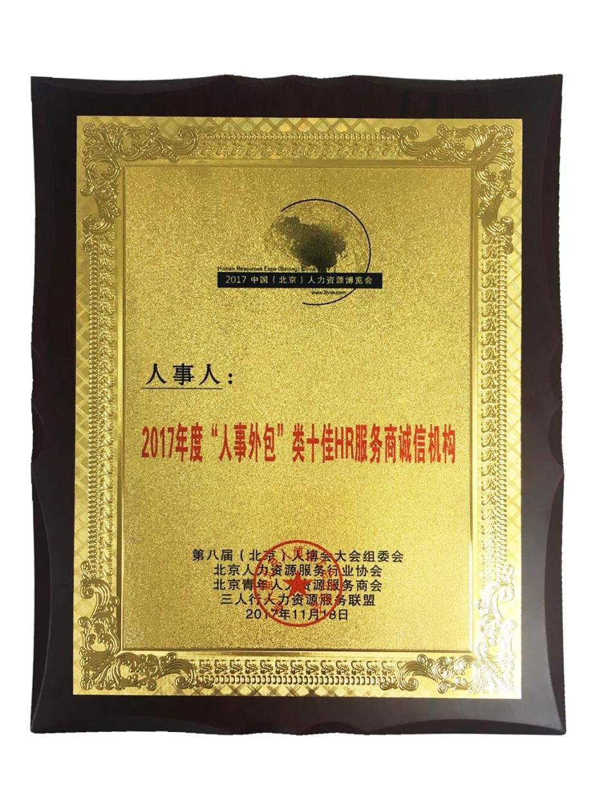
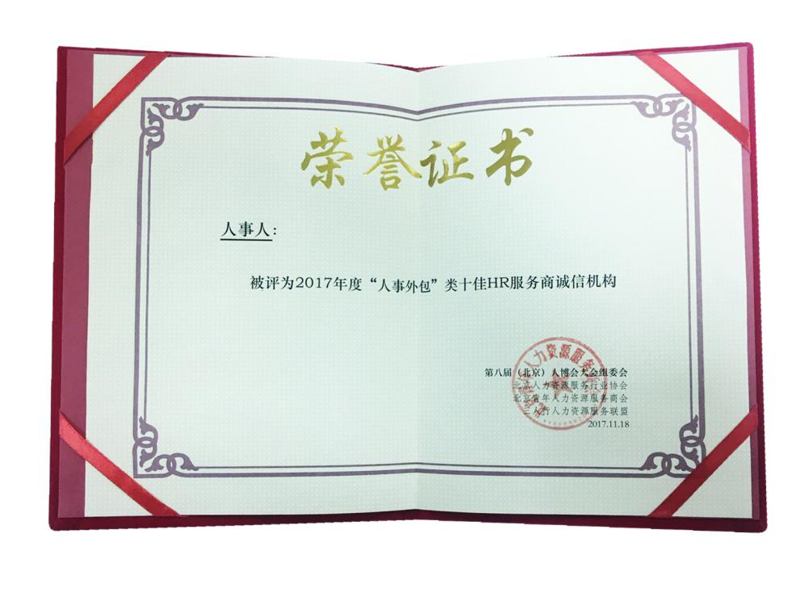
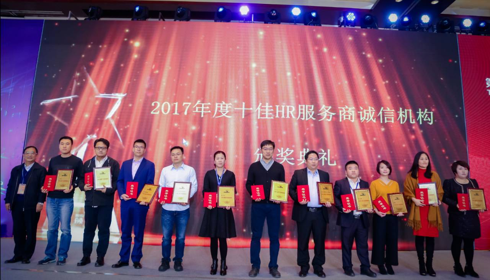
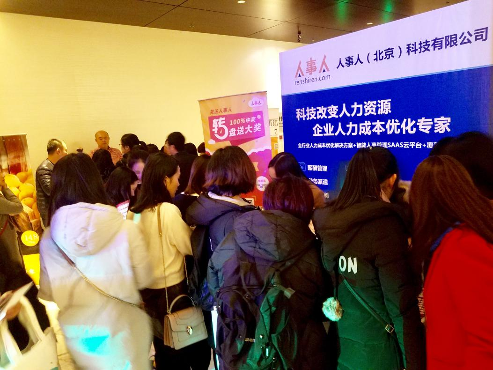

11月18日，由盛世三人行、北京青年人力资源服务商会、鼎源万家主办的第八届中国(北京)人力资源博览会在北京富力万丽酒店盛大举办!人事人作为中国人力资源外包服务领先企业受邀参加，凭借先进的发展理念与标准化企业服务规范荣获“2017年度“人事外包”类十佳HR服务商诚信机构”!


中国(北京)人力资源博览会，是一年一度的HR年终盛会，被誉为最专业的人力资源行业论坛。据悉，本届人博会1500余位HR参加，与20几位HR行业大咖共襄盛举!三茅网、中国人力资源公会、猎聘网、CHO首席人才官等9家业内知名媒体齐上阵!
上午10时许，颁奖典礼开始，人事人集团北京分公司总经理——王琳上台领奖。

(人事人集团北京分公司总经理——王琳上台领奖(右二))
此次活动，人事人不仅斩获了2017年度人事外包类“十佳HR服务商诚信机构”荣誉称号。现场的展位也是吸粉无数，人群聚集，HR们边参与人事人精心准备的互动小游戏，边了解人事人业务情况。

(人事人展位现场)
据了解，人事人不仅在本次活动中博得高度关注，10月25日中国(浙江)人博会，同样以蓬勃的朝气、细致入微的客户互动体验引爆全场，成为焦点。纵观近期人资行业，人事人似一匹黑马，异军突起般带给人们一个又一个震惊。
据介绍，人事人品牌成立于2015年，是一家综合的人力资源外包服务商，旗下的人力服务机构最早的成立于2008年;2015年，人事人研发了一站式人力资源SAAS服务平台。为客户提供“技术平台+解决方案+业务服务”综合化3A服务体系。人事人目前的业务服务覆盖薪酬管理、商业流程外包、福利管理、社保管理等板块;可根据不同企业的需求，定制化的输出解决方案。致力于帮助企业控制用工风险、降低人力成本。人事人已在全国375个城市实现了服务全覆盖，并在北京、上海、广州、杭州、南京等地设有13家直营机构，累计服务超过1万家企业。
会议围绕“下一个十年——论人力资源价值再造”为主题展开。相信，随着大数据的飞速发展与应用，下一个十年人力资源行业内的优秀企业必将得到鱼跃龙门的发展!
文章来源：http://news.ifeng.com/a/20171120/53427937_0.shtml